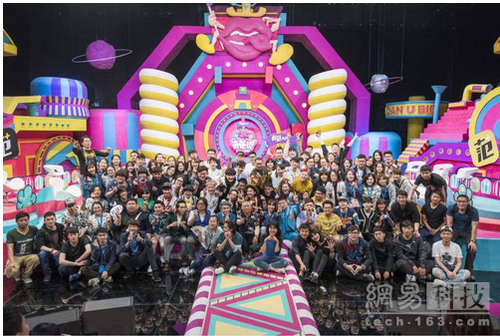

“没有不焦虑的时候，所以也没有最焦虑的时候……每个人都焦虑”，“文化产品是解决人内心焦虑和困扰最好的工具，所以文化产品应该有它自身的市场价值值”，“要么传播优质内容，要么只是‘工业废水’”，直播的竖屏逻辑背后正是人对关注度和归属感的需求……
——米未传媒创始人兼CEO马东
所以你可以理解为本文即将展现的是一名资深媒体人+成功创业者兼著名段子手，当他严肃起来，用结构主义与市场经济谈文化创业时是什么样子。
前段时间非著名相声演员郭德纲在接受媒体采访时谈到马东，“他是我们中的资本家，也算是我们中活得明白的”。这句话或许可以理解为对马东平衡游刃于文化与商业之间的一种褒奖。
在另一层面上对文化的认识，马东的理解或许与商业原力更接近。
以下为网易科技根据专访内容整理，以马东第一人称叙述方式呈现：
不少人问过我为什么要从爱奇艺出来选择创业。我觉得如果把人的职业生涯看作是一条波动线的话，其实中间还有一条主线在贯穿——就是这个人在干什么。所以现在在做的事情，其实是我一直在做的事情，并没有什么变化。
严格来说，创业不过是换一种方式去做原来一直在做的事情而已。
当然可能是因为平台不一样，角色不一样，外界给你的标签不一样，或者观察者的观察角度不一样，所以看起来好像变化特别多。但究其本质其实是同一件事——就是内容生产。
在这个过程中，确实有时候我们是从管理角度去观察内容生产，以理解内容生产的真正内在规律是什么。
我们要做娱乐的内容，这点毫无疑问。因为娱乐直指人心，是最简洁的路径，最容易接近你的受众，所以我们坚持做娱乐。
走出体制，焦虑是人生常态
最主要的原因，是整个社会在变化。30年前一个人要想从体制内出来，一般来讲不太可能，那会儿其实并没有体制外一说，大家都体制内，你就没的可想。
而今天已经有了更多的机会，当然很多时候是体制外看起来诱惑更多。
随着整个社会的市场化程度提高，公平性、契约精神等相关的东西都逐步在完善。只有社会发展到一定程度，比如某一具体行业里，专业律师的介入、协议规范性的提高、违法成本的提高等方面都已经相对完善的时候，就有了更好的所谓创业的土壤。
但其实究其根本，创业也不过是在不同的市场、不同的平台上去做相同的事情。
不过很多体制内的人为什么还是没有出来？主要是早期整个市场还不够规范，所以那个时候其实一个人从体制脱离，他的风险远远大于自己的承受能力，所以很多人选择仍然留在体制内。
可是你知道，创业也好，生活也好，其实人没有不焦虑的时候。每个人都焦虑。
对于我来说，没有不焦虑的时候，所以也没有最焦虑的时候。我们今天总羡慕古人的田园生活，但你说他们不焦虑吗？我觉得古籍里只要记载下来的，满纸都是焦虑。唐诗宋词里，别管是金戈铁马的豪放派还是各种温情的婉约派，全是焦虑。
所以焦虑其实是伴随人生命的一个常态。
它有点像科学家发现的宇宙背景辐射一样，我们以前不知道它存在，但其实它一直在那儿。
文化产品是解决人内心焦虑和困扰最好的工具
最近市场上也陆续推出不少付费内容产品。什么样的内容值得买？有价值的啊。但这个价值怎么理解？
我 们经常把文化价值和文化产品的价值混淆在一起，有时候甚至对立起来。但其实从古至今，那些特别棒的文化产品——比如唐诗宋词——在当时也具有一定的文化产 品价值。虽然穿越岁月到今天它们已经失去了文化产品价值——没人再去找古人收版权费什么的，但它依然有重要的文化价值。
所以文化价值往往都是在某个时代主要体现为它的文化产品价值。二者并不矛盾，也不应该被混淆。
无论怎样，文化产品都是帮人们解决一定问题的。消费者买手机可以和外部联系，买电脑可以提高自己的工作效率。购买文化产品是为了什么？在我看来，是为了解决内心的一些问题。文化产品是解决人内心焦虑和困扰最好的工具，所以文化产品应该有它自身的市场价值。
有 人觉得文化这个事和商业天然存在着矛盾，包括一些文化创业者自己好像也有内心挣扎。其实这不是今天的个例，自古有之。包括我们成长过程中都被灌输这个观 点。中国人重文轻商，这是历史传统。包括留传下来的什么“商人重利轻别离”这些，甭管怎么样，随便想总能找到几句骂生意人的话。
所以文化商业在我们这里有一个很奇怪的角色背景。
但在过去几十年市场化过程中，其实我觉得文化商业这个事情已经发生了特别大的变化。我不觉得今天的90后或95后中流人群对这个事件仍有特别大的困扰。最多不过是一些未经思考的概念上的冲突而已。
要么传播优质内容，要么只是“工业废水”
今年直播很热，我们自己也在介入，包括前些天在直播平台尝试了一下活动，效果很好。直播是一个新事物，大家都在看它往哪个方向走，最终会发展成什么样。但是对我来说，有两件事情是笃定的。
一是甭管什么样的传播，内容都是主体。否则平台再好，传播什么呢？所以，要么就传播优质内容，要么就是“生产工业废水”——被冗余内容充斥。人们对优质内容的渴求是永远存在的。
二 是我觉得所有做内容的人，所有做传播行业的人，首先应该对传播方式的变化保持极敏感的神经，就是保持一根一挑动就跳起来的神经。直播这个事看起来是技术进 步推动的。以前我们无法想象在已经这么高效的环境下，技术进步还会不断继续。如果按照国家规划的几年之后5G商业化，当然还会出现更多传播方式上的革命及 变化。
做传播的人不必对传播方式的变化大惊小怪，但需要保持一种敏感观察，看新传播方式能为内容传播带来哪些提升。
现在大家觉得直播平台上的内容大多还比较琐碎，有可能持续不下去。那什么样的内容会真的在直播平台上有意义，我觉得现在说什么都没有用，因为整个行业都在追求这个问题的答案。现在任何给出来的简单答案，都应该离正确答案不会太近，所以大家都在观察，都在学习。
如果一件新事物出来，马上有人说今后它一定就是这样的。对于这种言论我从内心就会打问号。
文化这个行业，只有经典，没有权威。
经典就是在某个特定时间、特定情况下出现的特定产品，这就足够了。并不意味着生产这个产品的人在今后所有时间段内说的话都准确或正确。
整个传播效率的提高，是在内容的优质化和技术进步促使传播成本降低这两者间互动进行，是两条绳子绞编在一起的一种状态。
所以我特别喜欢一句话，中国人形容君子，叫“虚而有节”。竹子既保证中间是空的，能够随时容纳新鲜的东西，同时也有节，人们大多把它形容为“气节”，但我觉得其实更重要的是“知止”，就是知道自己的边界在哪里，知道自己能做什么不能做什么，智慧与思维都是有边界的。
所以对于做内容的人来讲，虚而有节地去面对技术的进步和变化，拼命吸收，拼命学习，同时又知道自己做的事情是什么，其实这还挺难追求的。
我们观察世界，总是特别爱用标签去界定它。因为觉得把它界定完了，更容易“格物致知”，更容易去分析和理解它。但这种分析和理解往往又带来真正的误会和混淆。所以对于概念这种事，我特别警惕。
比如今天我们所说的“直播”，就一定是直播了吗？以后发生变化的时候，我们用什么词去代替它？其实中间这些事情都是有连贯性的，并没有明显的边界。我没有想过我们们自己在做直播时的边界是什么，只知道我们能做什么，然后试图寻找我们在其中能起作用的地方。
我觉得直播这个事情可以分几个层面看。
一是其实这轮直播热潮特别像视频网站刚出现的时候，都是出现一百多家甚至更多，都需要慢慢通过市场本身的机制去优化整合。
二是这一轮直播出现，最主要有两个变化：
1，技术的革新，包括手机前手摄像头分辨率的普遍提高，对通讯软件的优化、带宽的优化，这些使我们现在能够流畅、不受地域限制来进行直播。
2， 直接收费方式是推动这次大规模直播网站建立的一个基础。直播收费方式跟以往的生意模式发生了一些变化。比如视频网站在带宽成本和内容成本的压力下，其实在 很长时间里都没有达到盈亏平衡的经营状态，因为它是to B模式。但直播的to C模式让每个人都可以通过献花、飞机、游艇去表达自己的关注和支持，使平台收益有了很大的变化。
过去有些直播平台的收入情况其实已经很可观了，比如YY和9158这些，在纳斯达克上市公司的财报里都能看到。
所以今天的直播平台骤热其实并不是一个突然爆发的事情，有技术和收费模式这两个突破点，足以支撑这个行业目前的发展。
但今后它会在多大程度上影响人们的行为方式，人们会不会用更多的直播来代替人与人之间的社交和沟通渠道，在多大程度上能帮助人建立社交感，我觉得这才是这个行业需要问的重要问题。

直播的横屏逻辑和竖屏逻辑
个人来讲，我“狭隘地”把直播分成了横屏逻辑和竖屏逻辑。
有些从电竞渠道出来的直播平台，我把它称作横屏逻辑，这一类大家主要看内容所传递出来的信息量。
而竖屏逻辑，因为竖屏的构图关系，很多时候很难容纳两个或多个人，往往只能容纳一个人，所以它更容易给人带来一对一的交流感。
所以我们看到现在的移动视频直播，主播特别关注你送了什么礼物，第一时间就有反馈，其实背后就是这种关注和归属感。
上面说的这些微妙的感觉，和横竖屏到底具体有什么不同，其实现在大家都还不是很清晰，但其实都在探索过程中。所以直播的未来会怎样，不好说。
但如果说短时间内直播平台就会死掉，我会在心里画一个巨大的问号。因为我觉得它有市场，符合人们的一些行为需求和心理需求，所以有存在的价值。
对于我们来说，如果出现一个新的传播渠道，就应该勇敢去尝试。我们现在有专门团队，已经介入了这种尝试，因为我们想摸索里面的内在逻辑到底是什么，但短期内恐怕不会有结果。
在 一个公平和成熟的市场里，不用过于担心内容问题。比如最初上百家视频网站后来整合成十几家，最后合成四五家，这个过程就是市场作用的过程。那时候盗版满街 都是，后来高度依赖盗版的这些网站，就逐渐萎缩了，因为你没有前景。而依托高清、优质内容的全视频网站，就这样异军突起，而且一直保持着非常好的增长速 度，这就说明整个市场的健康度，其实是足以支撑正向的生长的。
直播其实可能也会这样，今天看起来它是无门槛的，但“风物长宜放眼量”，如果我们只看当下直播的形态，就判断今后一两年还是今天这样，那就不叫前瞻性判断了。
我们不知道它会发生什么样的变化，但是变化是一定的。
现 在也有人谈视频创作的UGC还是PGC问题。我自己在视频行业里学习这几年，一个深刻感受就是这些词儿都是外界拿来试图描述和规范这个行业的。什么是 UGC，什么是PGC？还有人说自己是OGC或PPC。但它们的边界在哪儿？UGC在什么时候就变成PGC了？是不是用一个1080P的设备，我就变成 PGC了嘛？还是说有一个专门的人写稿子，我就变成PGC了？
到底边界在什么地方？我觉得从这个角度上分析，好像有点不太对，说不清楚。所以如果用这些前提来讨论问题，我完全说不清楚，因为我自己都不知道这些概念的边界在哪里。但我觉得，那些都不重要。
重要的还是内容创作本身怎么能好地符合这个渠道的传播规律。技术进步导致我们现在用手机，有横屏、有竖屏逻辑，今后会不会出现方屏？谁知道，如果有需要，那就一定会出现。
直 播这个形态现在主要在年轻人群中爆发，我觉得主要是它所带来的那种封闭、排他的交流感受。就像日本的“一兰拉面”，店铺里把顾客划分在小阁子里，只有一个 竹帘，竹帘打开里面有工作人员在走动，但并没有人理你，仅仅是根据你自己划的单子为你提供餐食。所以，虽然面吃起来并没有什么特别，但它正是打造一种孤独 的、沉静的文化在里面，代表着某种意境，所以大受热捧。
我觉得今天的直播也有这种感觉。这才是交流渠道所带来的真正心理基础，但具体会发生什么或演变成什么，不知道。
我要削尖脑袋地去理解一些新鲜事
很多时候和我这个年纪的人沟通类似直播这些事物的时候，大家经常说“真看不懂这帮小兔崽子，弄什么呢这是”，我觉得这主要出于两种心态，一是你不理解没关系，尝试去理解。第二种是，不理解，但觉得和自己也没有毛关系。
第二种心态就说明你老了。
我一直在学习，我要削尖脑袋地去理解这些事。
文 化是什么？这点特别重要，我觉得这个涉及到文化观的问题，往前追溯还有一个文化历史观的问题。商业文明不是文化吗？商业文明在某种程度上——比如追求效 率，在推动社会进步上，和我们所谓理解的那个狭义文化，至少发挥着同样的作用。所以为什么当社会提倡商业公平、提倡让大家都有价值思维的时候，人们却说这 个社会文化沦落、沦陷、沦丧了？
现在大家都在谈的直播和网红，其实背后也能找到它们的“原力”。
第一是人们对新的传播渠道的追求是永无止境的。尤其是年轻人的逆反心理，你们用这种方式，我就偏要去用那种方式，所以虽然有Facebook有Twitter，但Snapchat也非常流行——年轻人不愿意和你用同样的方式去交流。
不仅仅是这代年轻人，代代年轻人都是这样，追求新鲜感，追求标新立异、特立独行。
所以，代代年轻人都在创造，从整个大文化来看，这就是动力和活动，是注入了新的东西。
慢 慢地，当一种事物成熟以后，它又被证明是有益无害的，慢慢地自然就沉淀到了文化里，所以若干年后就变成了文化传统。从昆曲发展而来的京剧，到梅兰芳、程砚 秋一代人的时候已经变成了万人空巷的流行音乐，但在今天我们来看这就是高度程式化的戏曲。后来有人喜欢高晓松，有人喜欢罗大佑，有人喜欢周杰伦。
如果只是因为一件事物是今天年轻人喜欢的，就缺少价值，我不同意，我觉得恰恰相反。
虽然未必每个社会现象背后都有所谓的文化归因，但一定有心理归因，尤其是在年轻人心里。一个新事物的出现，能激发年轻人这么大的热情，一定是有原因的。反正从我的角度说，更多的是去学习和拥抱这些。
我就是一个生于60年代的90后。
- 推荐图文
- 推荐人物
- 推荐企业